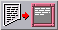
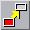
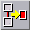

<!-- Documentation Xclamation (c)1994-2000 AXENE contact axene@axene.org>
<html>
<head>
<title>Barre horizontale d'icônes &quot;Texte&quot;</title>
</head>

<body BGCOLOR="#FFFFFF" BACKGROUND="Images/back.gif" TEXT="#000000">
<p ALIGN="right">


<p>
<br>
<br>
La barre d'icônes 'Texte' met à disposition des outils
concernant les cadres contenant du texte, notamment les
opérations de chaînage de texte. Lorsqu'un texte
est long et qu'il dépasse de son cadre, il est
possible d'afficher la partie qui déborde dans
un autre cadre. Le fait qu'un texte soit partagé
entre plusieurs cadres s'appelle un 'chaînage de cadres'. Dans
une chaîne de cadres, chaque cadre constitue un maillon.
L'ordre des maillons dans une chaîne a de l'importance
puisque le texte se distribuera dans l'ordre des maillons
de la chaîne. Une chaîne peut contenir des cadres 
appartenant à des pages différentes mais à
l'intérieur 
d'un même document. Des cadres vides peuvent être
chaînés.
<br>
<br>
<hr>
<br>
<center>
<br>
<i><small>
Photo d'écran&nbsp;: Barre d'icônes Texte
</i></small>
</center><p>
<br>
<hr>
<br>
<p>
<h3>Première section de la barre d'icônes&nbsp;:</h3>
<ul>
  <li> 
     <a NAME="editor_icon">le
     bouton icône permet d'ouvrir 
     l'</a><a HREF="Box_Editor.html">éditeur de texte</a> afin
     de <b>créer ou modifier le texte</b> d'un cadre. Ce bouton n'est
     accessible que si un seul cadre vide ou contenant du texte est 
     sélectionné.
</ul>

<p>
<br>
<h3>Seconde section de la barre d'icônes&nbsp;:</h3>
<ul>
  <li> 
     <a NAME="link_end_icon">le
     premier bouton icône permet d'<b>ajouter un cadre en 
     fin de chaîne</b>. Procéder comme suit&nbsp;:
     <ol>
       <li>Cliquer dans la chaîne (ou dans un cadre vide si vous voulez
	  créer une chaîne sans texte).
       <li>Cliquer dans le cadre vide à ajouter.
       <li>Recommencer en 1 ou cliquer avec le bouton droit pour quitter 
	  le chaînage.
     </ol>
     Lorsque le curseur souris prend la
     forme d'un sens interdit, cela signifie qu'il pointe un cadre qui ne
     peut être lié.
     Entre les étapes 1 et 2, il est possible de changer de page.
     Le cadre ajouté devient le dernier maillon de la chaîne.<br>
     <b>Exemple&nbsp;:</b> si <i>X</i> est le cadre à ajouter et <i>(1-2-3-4)</i> 
     une chaîne de quatre cadres, cliquer sur <i>2</i> puis sur <i>X</i> donnera
     la chaîne <i>(1-2-3-4-X)</i>.
     </a><p>
  <li> 
     <a NAME="link_beginning_icon">le
     second bouton icône permet d'<b>insérer un cadre en début
     de chaîne</b>. Le mode opératoire est le même que
     celui de l'option précédente. Le cadre ainsi ajouté
     devient le premier maillon de la chaîne.<br>
     <b>Exemple&nbsp;:</b> si <i>X</i> est le cadre à ajouter et <i>(1-2-3-4)</i> 
     une chaîne de quatre cadres, cliquer sur <i>2</i> puis sur <i>X</i> donnera
     la chaîne <i>(X-1-2-3-4)</i>.
     </a><p>
  <li>
     <a NAME="link_before_icon">le
     troisième bouton icône permet d'<b>insérer un
     cadre dans une chaîne avant un certain maillon</b>. Procéder comme suit&nbsp;:
     <ol>
       <li>Cliquer dans le cadre vide que vous voulez insérer.
       <li>Cliquer dans le cadre de la chaîne avant lequel vous
	  voulez positionner le nouveau cadre.
       <li>Recommencer en 1 ou cliquer avec le bouton droit pour quitter 
	  le chaînage.
     </ol>
     Lorsque le curseur souris prend la
     forme d'un sens interdit, cela signifie qu'il pointe un cadre qui ne
     peut être lié.
     Entre les étapes 1 et 2, il est possible de changer de page.<br>
     <b>Exemple&nbsp;:</b> si <i>X</i> est le cadre à ajouter et <i>(1-2-3-4)</i> 
     une chaîne de quatre cadres, cliquer sur <i>X</i> puis sur <i>2</i> donnera
     la chaîne <i>(1-X-2-3-4)</i>.
     </a><p>
  <li> 
     <a NAME="link_after_icon">le
     quatrième bouton icône permet d'<b>insérer un cadre dans
     une chaîne après un certain maillon</b>. Le mode opératoire 
     est le même que
     celui de l'option précédente.<br> 
     <b>Exemple&nbsp;:</b> si <i>X</i> est le cadre à ajouter et <i>(1-2-3-4)</i> 
     une chaîne de quatre cadres, cliquer sur <i>X</i> puis sur <i>2</i> donnera
     la chaîne <i>(1-2-X-3-4)</i>.
     </a><p>
  <li> <a NAME="unlink_icon">le
     dernier bouton icône permet de <b>délier un cadre d'une
     chaîne</b>. Il faut qu'un cadre d'une chaîne
     soit sélectionné avant de presser sur ce bouton. Le
     cadre ainsi éliminé de la chaîne devient un cadre
     vide.
     </a><p>
</ul>
<br>
<hr>
<p ALIGN="right">
<p>
</body>
</html>


